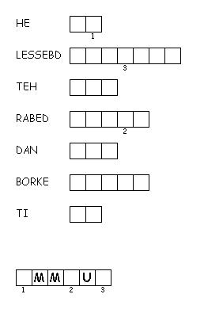

This week's lessons: Acts 2:14a, 36-41 , Psalm 116: 1-4, 12-19, 1 Peter 1:17-23, Luke 24:13-35
This
week's lessons: Acts
2:14a, 36-41 , Psalm
116: 1-4, 12-19, 1
Peter 1:17-23, Luke
24:13-35
Elementary School Pew-work
W T G T A B L E B A
|
Word List |
(Luke 24:30-31) When he was at the table with them, he took bread, blessed and broke it, and gave it to them. {31} Then their eyes were opened, and they recognized him; and he vanished from their sight. (NRSV) |
from http://www.efree.mb.ca/lectionarypuzzles free to distribute for free with this notice. Words are in a straight line left to right or top to bottom |
||
|
1. Who was the man Jesus accompanied on his journey? ____________________________________________ 2. Did the two people recognize Jesus? ____________________________________________ 3. What did the people do even though they thought they didn't know Jesus? ____________________________________________ 4. What did the two people do as soon as Jesus left? ____________________________________________ |
Created by Puzzlemaker at DiscoverySchool.com |
from
Mazemaker at http://hereandabove.com/maze/mazeorig.form.html
Next
week's lessons: Acts
2:42-47,
Psalm
23,
1
Peter 2:19-25,
John
10:1-10